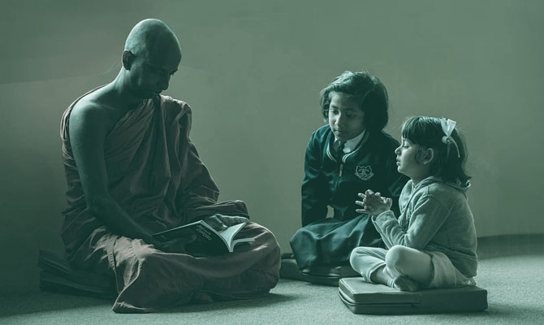

Bharatha Samskara Pracharana Sabha
ഭാരതം എക്കാലത്തും ഒരു സവിശേഷ ഭൂമിയായാണ്. മനുഷ്യനും പ്രകൃതിയും ഈശ്വരനും തമ്മിലുള്ള ബന്ധത്തെ അതിന്റെ പൂർണ്ണതയിൽ ദർശിച്ച സംസ്കൃതിയാണ് ഭാരത സംസ്കാരത്തിലെ സനാതനധർമ്മം.
ഭാരതത്തിൻറെ ആചാരങ്ങളിൽ പലതും വെറും അന്ധവിശ്വാസം എന്നു പറഞ്ഞ് പലരും പലപ്പോഴും അവഗണിക്കാറുണ്ട്. എന്നാൽ അതിലെ യുക്തിയും ശാസ്ത്രീയതയും നാം മനസിലാക്കണം.
നമ്മുടെ വിലമതിക്കാനാകാത്ത പൈതൃകത്തേയും സംസ്കാരത്തേയും തള്ളിപറഞ്ഞു കേവലം വോട്ടിനു വേണ്ടി കെട്ടിച്ചമച്ച ഇതര മതങ്ങളെ പുകഴ്ത്തുന്ന നട്ടെല്ലില്ലാത്ത രാഷ്ട്രീയകാരാണ് നമ്മുടെ നാടിന്റെ ഇന്നത്തെ ഏറ്റവും വലിയ ശാപം. ഒപ്പം ജനങ്ങളുടെ ധനത്തെയും ആദരവിനെയും മോഹിച്ചു മതത്തിൻറെ പേരിൽ നാടിനെ ചൂഷണം ചെയ്യുന്ന മതവക്താക്കളും.
ഇന്ന് കാണുന്ന ഹൈന്ദവ മതവും വിഗ്രഹങ്ങളും വിശ്വാസപ്രമാണങ്ങളും ആചാരാനുഷ്ടാനങ്ങളും ഒക്കെ രാജഭരണകാലത്ത് രാജ്യത്തിൻറെ സുരക്ഷക്കും നന്മയ്ക്കും ഒപ്പം രാജാവിൻറെ രക്ഷക്കും ഒക്കെ ഉണ്ടാക്കിയെടുത്ത രാജതന്ത്രങ്ങൾ ആണ്, അല്ലാതെ ഭാരത സംസ്കാരത്തിന്റെ ഭാഗമല്ല. പിൽക്കാലത്ത് കഥയറിയാതെ ആട്ടം കാണുന്ന ജനങ്ങൾ ഉണ്ടായപ്പോൾ ഇതൊക്കെ ഇന്നുകാണുന്ന രീതിയിൽ അധപതിച്ചു എന്നുമാത്രം.
ഭാരതം എക്കാലത്തും ഒരു സവിശേഷ ഭൂമിയായാണ്. മനുഷ്യനും പ്രകൃതിയും ഈശ്വരനും തമ്മിലുള്ള ബന്ധത്തെ അതിന്റെ പൂർണ്ണതയിൽ ദർശിച്ച സംസ്കൃതിയാണ് ഭാരത സംസ്കാരത്തിലെ സനാതനധർമ്മംഭാരത സംസ്കാരത്തിന്റെ പ്രാധാന്യം മനസിലാക്കാൻ വളരെ കുറച്ചു കാര്യങ്ങൾ കുറിക്കട്ടെ -
വിദ്യാഭ്യാസം
സ്വാമി വിവേകാനന്ദന്റെ വിദ്യാഭ്യാസദർശനം പറയുന്നത് നമ്മുടെ ഉള്ളിൽ അന്തർലീനമായിരിക്കുന്ന ശക്തിയെ, കഴിവിനെ പുറത്തു കൊണ്ടു വരികയെന്നതാണ് യഥാർത്ഥ ഭാരതീയ വിദ്യാഭ്യാസം എന്നാണ്. ഭാരതീയ സംസ്കാരം വളർന്നതും വളരുന്നതും ഗുരുശിഷ്യ സംസ്കാര പരമ്പരയിലൂടെയാണ്.
യാതൊന്നിനെക്കുറിച്ചുള്ള അറിവാണോ മനുഷ്യനെ പൂർണ്ണനാക്കുന്നത് അതാണ് ശരിയായ ബ്രഹ്മജ്ഞാനം.
സംസ്കാരം
ഓരോ രാജ്യത്തിനും ദേശത്തിനും അവരുടെ സംസ്കാരം ഏറ്റവും വിലയേറിയതും മൂല്യമുള്ളതും ആണ്. ഭാരത സംസ്കാരം അല്ലതെ ലോകത്തിലെ മറ്റൊരു സംസ്കാരവും മനുഷ്യമനസ്സിനെ ഇത്രത്തോളം ശാസ്ത്രീയമായി ആഴത്തില് പഠിച്ചിട്ടില്ല. മനുഷ്യമനസ്സിൻറെ സാദ്ധ്യതകളത്രയും പൂർണ്ണമായും ലക്ഷ്യമിട്ട്, മനുഷ്യൻറെ ആത്യന്തികമായ ശ്രേയസ്സിനുവേണ്ടി യുക്തി പൂർവ്വവും ശാസ്ത്രീയമായും സമഗ്രമായ ധാരണയോടു കൂടെ തയ്യാറാക്കിയതാണ് ഭാരതീയ സംസ്കാരം.
മറ്റു രാജ്യങ്ങളിലുള്ളവരേക്കാൾ ബുദ്ധിയിലും മർത്ഥ്യത്തിലും ഏറെ മുന്നിട്ടു നിൽക്കുന്ന ഭാരത്തിലെ മനുഷ്യനെ പ്രബുദ്ധനാക്കാൻ വേണ്ട എല്ലാ സാങ്കേതിക വിദ്യയും ആദ്ധ്യാത്മികതയും ഭാരത സംസ്കാരത്തിൽ ഉണ്ട്. ഭാരത്തിന്റെ ആദ്ധ്യാത്മിക പാരമ്പര്യം നമ്മുടെ ബുദ്ധിയെയും ചിന്തയെയും പ്രത്യേക രീതിയിൽ തീക്ഷ്ണമാക്കിയിട്ടുണ്ട്.
ആത്മീയം
പാശ്ചാത്യ സംസ്കാരം ശരീരത്തിന് (സ്ഥൂല ശരീരം) പ്രാധാന്യം കൊടുക്കുമ്പോൾ ഭാരതീയ സംസ്കാരം ആത്മാവിനാണ് (സൂക്ഷ്മ ശരീരം) പ്രാധാന്യം കൊടുക്കുന്നത്. ഇത്ര മഹത്തായ സംസ്കാരത്തെ മതത്തിന്റെ വേലി കെട്ടുകൾകുള്ളിൽ തളച്ചിട്ട്കൊണ്ട് ഭൗതികമായ നേട്ടങ്ങൾക്കു വേണ്ടിയുള്ള അറിവുകളുടെയും ലൌകിക സുഖങ്ങളുടെയും പുറകെ വൃഥാ പരക്കം പാഞ്ഞപ്പോൾ തകർന്ന് തരിപ്പണം ആയത് അമൂല്യമായ ഒരു പൈതൃകമാണ്.
ഇന്ന് ലോകരാജ്യങ്ങളും മഹത്വ്യക്തികളും ഭാരതത്തിന്റെ ഈ അമൂല്യങ്ങളായ ആധ്യാത്മിക ജ്ഞാനത്തിനെ അത്ഭുതത്തോടെ സ്വീകരിക്കുമ്പോൾ നമ്മൾ ഇവയെയെല്ലാം വർഗ്ഗീയത എന്ന മുദ്രകുത്തി പുച്ചത്തോടെ തള്ളികളയുന്നു.
ധർമ്മം രണ്ടു തരത്തിലാണ്, ഒന്ന് ശരീരധർമ്മം (ഭൗതികം). രണ്ട് ആത്മാവിൻറെ ധർമ്മം (സനാതനധർമ്മം).
കർമ്മം
ഭാരതസംസ്കാരത്തിൽ നമ്മള് വിശ്വസിക്കുന്നത് ജീവിതം കർമ്മ ഫലമാണ് അതായത് ജീവിതത്തിനുത്തരവാദി അവനവന് തന്നെയാണ്, എന്നാൽ പാശ്ചാത്യസംസ്കാരം വന്നതോടെ അത് വിധി അല്ലങ്കിൽ തലയിലെഴുത്തായി അധപതിച്ചു.
വാസ്തവത്തിൽ നമ്മൾ മനസ്സിലാക്കേണ്ടിയിരിക്കുന്നത് നമ്മുടെ ജയപരാജയങ്ങളെ നിർണ്ണയിക്കുന്നത് നമ്മുടെ തന്നെ പ്രവർത്തികളാണ് അല്ലാതെ ഒരു ദൈവവും സ്വാധീനിക്കാനെത്തുന്നില്ല എന്ന ഭാരത സംസ്കാരത്തിന്റെ സത്യമാണ്.
നമ്മുടെ ജീവിതത്തിന്റെ വിജയ ശില്പി നമ്മൾ തന്നെ എന്നും, നമ്മൾ ചെയ്യുന്നതിലെല്ലാം നമ്മുടെ ക്രീയാത്മക ചിന്തയുടെ പ്രതിഫലനം പ്രകടമാണെന്നും ഉള്ള ഭാരത സംസ്കാരത്തിന്റെ മൂല്യം ഇന്ന് ചില വിദേശ എഴുത്തുകാർ ഉൾക്കൊണ്ട് അതവരുടെ കണ്ടെത്തലാക്കി, ഏറ്റവും കൂടുതൽ വിൽക്കപ്പെടുന്ന പുസ്തകങ്ങളാക്കി മാറ്റി.
മതത്തിനും പാശ്ചാത്യതക്കും അടിമയായ മനുഷ്യർ ഇന്ന് നിഷ്ക്രിയരായി, വിധിയെന്നും ദൈവത്തിൻറെ ലീലാവിലാസമെന്നും പറഞ്ഞു പഴികൾ മറ്റെവിടെയൊക്കെയോ ചാർത്തി സ്വയം ഉദാസീനരായി മാറി. അതിനാൽ ഇന്ന് ഭാരത സംസ്കാരം എന്നത് നമുക്ക് ഏതോ പ്രാകൃത ചിന്തയായി പരിണമിച്ചു.
ശീലങ്ങൾ
രാവിലെ സൂര്യോദയത്തിനു മുൻപായി വലതുവശം ചരിഞ്ഞു എഴുന്നേറ്റു ഈശ്വര പ്രാത്ഥനയോടെ പ്രഭാത കർമ്മങ്ങൾ ചെയ്യണം. സൂര്യന് അഭിമുഖമായി നിന്ന് സർവ്വഗവ്യായാമം ചെയ്യുമ്പോൾ ശരീരവും മനസും ഒരുപോലെ ക്രീയാത്മകമാകുന്നതോടൊപ്പം സൂര്യനിൽ നിന്നുള്ള ഊർജ്ജവും ലഭിക്കും.
ഈ വ്യായാമം ചെയ്യേണ്ടത് നഗ്നപാദനായി പുഴയോരത്തോ നദീതീരത്തോ കുളികഴിഞ്ഞു വേണമെന്നതാണ് നിഷ്കർഷ, കാരണം ഉറങ്ങിക്കിടക്കുമ്പോൾ ശരീരത്തിലുള്ള ഊർജം സ്റ്റാറ്റിക് ആണ്. എഴുന്നേൽക്കുമ്പോൾ കൈനറ്റിക് എനർജിയാണു ശരീരത്തിൽ നിറയുന്നത്. ഭൂമിയിലും വെള്ളത്തിലും തൊടുന്നതോടെ ശരീരത്തിലെ മലിനോർജം പോയി ശുദ്ധോർജം നിറയുന്നു.
ആഹാരം കഴിക്കുന്നതിന് മുന്നേ കയ്യും വായും കഴുകുക, പുറത്തു പോയി വന്നാൽ പാദവും കയ്യും മുഖവും കഴുകുക ഇങ്ങനെ ഒട്ടനവധി ശാസ്ത്രീയ അടിത്തറയുള്ള ശീലങ്ങൾ ഭാരത സംസ്കാരത്തിന്റെ ഭാഗമാണ്.
മുക്തി
മനുഷ്യൻ എന്ന നിലയ്ക്ക് ഭാരത സംസ്കാരം ഏറ്റവും കൂടുതൽ മൂല്യം കൊടുക്കുന്നത് ഒരു വ്യക്തിയുടെ ജീവിതത്തിന്റെ പരമമായ ലക്ഷ്യമായാ മുക്തിയാണ്. ഈ മുക്തിയിലെത്തിച്ചേരുവാന് ഓരോ വ്യക്തിയേയും പ്രാപ്തനാക്കുന്നതാണ് ഭാരതീയ സംസ്കാരം കാതലയഭാഗം. എന്നാൽ വിലമതിക്കാനാകാത്ത ഈ നിധിയെ തിരിച്ചറിയാൻ പറ്റാത്ത രീതിയിൽ മാനുഷിക സംബ്രതായങ്ങളായ മതത്തിന്റെയും രാഷ്ട്രീയത്തിന്റെയും വിദ്യാഭ്യാസത്തിന്റെയും അതി പ്രസരണം കോട്ടം വരുത്തി.
മാത്രവുമല്ല സാമൂഹ്യവും ഭൗതീകവുമായ വസ്തുക്കളെ ആസ്പദമാക്കികൊണ്ടുള്ള വർണ്ണശബളമായ പാശ്ചാത്യസംസ്കാരം ഇന്നത്തെ സമൂഹത്തിൻറെ ഇന്ദ്രിയങ്ങളെ സ്വാധീനിച്ചു കീഴ്പെടുത്തി.
ഈശ്വരൻ
മനുഷ്യൻറെ ചൈതന്യമാകുന്ന ആത്മാവിന്റെ വിയോഗത്തെത്തുടർന്നു പ്രാണൻ വേർപെടുന്നു മരണം സംഭവിക്കുന്നു. ആധുനിക വൈദ്യശാസ്ത്രത്തിൽ മരണം സംഭവിച്ച്ഏകദേശം മൂന്നു മണിക്കൂർവരെ ശരീരത്തിൽ പ്രാണൻ ഉണ്ടായിരിക്കും എന്നാണു വെളിപ്പെടുത്തിയിരിക്കുന്നത്. അതുകൊണ്ടാണ് ആ ശരീരത്തിലെ അവയങ്ങൾ പുറത്തെടുത്തു വേറൊരു മരണപ്പെടാത്ത ശരീരത്തിൽ ഘടിപ്പിക്കുന്നതും അവയെ വീണ്ടും പ്രവർത്തിപ്പിക്കുന്നതും. മരണത്താൽ ചൈതന്യമറ്റ ശരീരത്തിൽ ആത്മാവ് ഇല്ലാത്തതു കൊണ്ട് ശരീരത്തെ കീറിമുറിക്കുമ്പോൾ വേദന അനുഭവപ്പെടില്ല. അപ്പോൾ ആരാണോ ഈ മനസ്സിനെ ശരീരത്തെ ഉണർത്തുന്നത്, അതുപോലെ മനസ്സിനെ ശരീരത്തെ പ്രവർത്തിപ്പിക്കുകയും നിലനിർത്തുകയും ചെയ്യുന്നത് ആ ചൈതന്യത്തെയാണ് ഭാരത സംസ്കാരത്തിൽ ഈശ്വരൻ അഥവാ ബ്രഹ്മം എന്ന് വിശേഷിപ്പിക്കുന്നത്.
ആത്മാവ് മരണത്താൽ വേർപെട്ട് പരമാത്മാവുമായി ലയിക്കുന്നു, അവിടെ നിന്നും വീണ്ടും മനുഷ്യ ജന്മം എടുക്കുന്നു ഇതിനെയാണ് പുരജന്മം എന്ന് വിശേഷിപ്പിക്കുന്നത്. മനുഷ്യ ആത്മാവിനെ ഉണർത്തിയുയർത്തിയാൽ അത് മോക്ഷപ്രാപ്തിയിലെത്തും, പിന്നെ ആ ആത്മാവിന് പുനർജന്മമില്ല നിത്യത മാത്രം.
ഭാരത സ്ത്രീകൾ
പവിത്രമായ ക്ഷേത്രമാണ് കുടുംബമെങ്കിൽ അതിലെ ദേവിയാണ് സ്ത്രീയെന്ന് ഭാരതീയ സങ്കല്പംസ്ത്രീകളെ മാതാവായി കരുതണമെന്ന് ആദ്യം ലോകത്തെ പഠിപ്പിച്ചത് ഭാരത സംസ്കാരം ആണ്.
ലോകത്തിലെ ഇതര മതങ്ങളിൽ ഈശ്വരീയ സത്തക്ക് പുരുഷഭാവമാണെന്ന് മനസ്സിലാക്കാൻ ബുദ്ധിമുട്ടൊന്നുമില്ല എന്നാൽ ഭാരതീയ സംസ്കാരത്തിൽ ഏകമായ പുരുഷ ദൈവ സങ്കൽപ്പം കാണാൻ, അഥവാ ദൈവസങ്കല്പത്തിൽ പോലും പുരുഷനും സ്ത്രീക്കും തുല്യത കാണിച്ചിരിക്കുന്നത്. അതാണ് സത്യവും. ലോകത്ത് മറ്റെവിടെയും ഇത്രയും മനോഹരമായ സ്ത്രീപുരുഷ ഏകീകരണത്തിന്റെ പ്രതീകം കാണാനാകില്ല.
മാത്രവുമല്ല ഭാരത സംസ്കാരത്തിൽ സ്ത്രീകളെ സരസ്വതിയായോ ലക്ഷ്മിയായോ ദുർഗ്ഗയായോ മൂന്ന് ദേവതകളിൽ ഒരാളായി ചിത്രീകരിക്കുന്നു. പുരാതനകാലത്തു എല്ലാ സമൃദ്ധിയും നൽകിയിരുന്ന ഭാരതത്തിലെ പുഴകൾക്കു പോലും സ്ത്രീഭാവമാണ്. സ്വന്തം ഭാര്യയേയും, അമ്മയേയും, സഹോദരിയേയും മാതൃത്വത്തിന്റെ പര്യായമായ "ദേവീ" എന്ന് വിളിക്കുന്ന പരിപാവന പാരമ്പര്യമാണ് ഭാരതത്തിന്റേത്. കഴിഞ്ഞ തലമുറകളിൽ സ്ത്രീകളുടെ നാമധേയം പോലും നോക്കിയാൽ അത് മനസിലാക്കാം.
മുത്തശ്ശിയായി, അമ്മയായി, ഭാര്യയായി, പെങ്ങളായി, മകളായി, സുഹൃത്തായി, നമ്മുടെ അറിവും ആചാരങ്ങളും പകര്ന്നും പരിപാലിച്ചും പൈതൃകം തലമുറകളായി കൈമാറി വരുന്നതില് സ്ത്രീകള്ക്കു ഉള്ള പങ്ക് അതിപ്രസക്തവും പ്രധാനവുമാണ്.
ഒരു നാടിന്റെ ജീവ സ്രോതസ്സാണ് സ്ത്രീ. ഭാരതത്തെ മാതൃകയാക്കി ഇന്ന് എല്ലാ രാജ്യങ്ങളും സ്ത്രീകളുടെ ഉന്നമനത്തിന് അത്യധികം പ്രാധാന്യമാണ് നല്കുന്നത്. കാരണം ഒരു കുടുംബം നന്നാകുന്നത് സ്ത്രീ നന്നാകുമ്പോഴാണ്. ഓരോ കുടുംബവും നന്നാകുമ്പോഴാണ് ഒരു രാജ്യം നന്നാകുന്നത്.
by Swami VivekanandaAll the powers in the universe are already ours. It is we who have put our hands before our eyes and cry that it is dark.
കാവ്
പ്രകൃതിയുടെ ആവാസ വ്യവസ്ഥയെ അതുപോലെ പരിപോക്ഷിച്ച് നിലനിറുത്തുന്ന പ്രദേശത്തെയാണ് കാവ് എന്ന് നാമകരണം ചെയ്തിരിക്കുന്നത്. വികസനത്തിൻറെ ഭാഗമായി കാവുകൾ കയ്യേറി നശിപ്പിച്ചു ആവാസവ്യവസ്ഥയെ തകിടംമരിക്കാതിരിക്കുവാനാണ് സർപ്പകാവുകളായി അതിനെ നാമകരണം ചെയ്തത്. അല്ലാതെ സർപ്പങ്ങളെ ആരാധികനോ പൂജിക്കാനോ അല്ല.
ക്ഷേത്രങ്ങൾ
മനുഷ്യൻറെ പാഞ്ഞേദ്രിയങ്ങളെ സ്വാധീനിച്ചുകൊണ്ട് മനസിനും ശരീരത്തിനും ഒരുപോലെ കുളിർമയും ഉന്മേഷവും പകരാനായി വേർതിരിച്ച സ്ഥലമാണ് അമ്പലങ്ങൾ. അതിനായുള്ള ഉപാധികളാണ് ക്ഷേത്രത്തിൽ സാന്വയിപ്പിച്ചിരുന്നത്. ആൽത്തറയും ചുറ്റമ്പലവും അമ്പലകുളവും ഒക്കെ അതിനുവേണ്ടി തന്നെയായിരുന്നു. വിഗ്രഹങ്ങളെ പ്രതിഷ്ഠിച്ചു അതിനെ ആരാധിക്കുന്ന പ്രകൃതമായിരുന്നില്ല അമ്പലങ്ങളിൽ ഉണ്ടായിരുന്നത്.

മുകളിൽ പ്രതിബാധിച്ചിരിക്കുന്ന പ്രപഞ്ച സത്യങ്ങളെ മാനുഷിക മൂല്യങ്ങളെ ദൈവീക മർമ്മങ്ങളെ നിലനിറുത്താനും മറ്റുള്ളവരിലേക്ക് പകരാനും രൂപീകൃതമായ കൂട്ടായ്മയാണ് ഭാരത സംസ്കാര പ്രചരണ സഭ.
ജാതിമത ചിന്തകൾക്കതീതമായി ഭാരതത്തിൻറെ ജനാതിപത്യ വ്യവസ്ഥിതി നിലനിറുത്തികൊണ്ടുതന്നെ ഇത്തരത്തിൽ നമ്മുടെ നല്ല പൈതൃകത്തെ ലോകത്തിന് മാതൃകയാകും വിധം വീണ്ടും ഉയർത്തിക്കാട്ടാൻ സന്നദ്ധമായ വ്യക്തികളുടെ കൂട്ടായ്മായാണിത്.


{kind=link}
{kind=link}
Robert John
Dec 13 2022A person whose mind is not free is a slave, not a free man.
ReplyChristine Hill
December 27 2022A man who is living but if his mind is not free, better to considered as dead
Reply